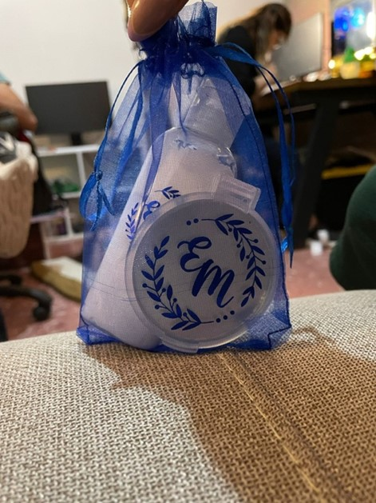
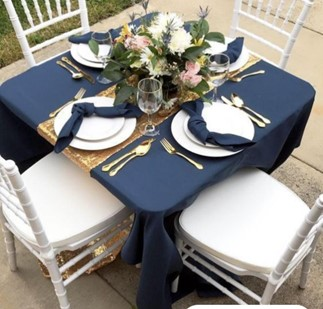
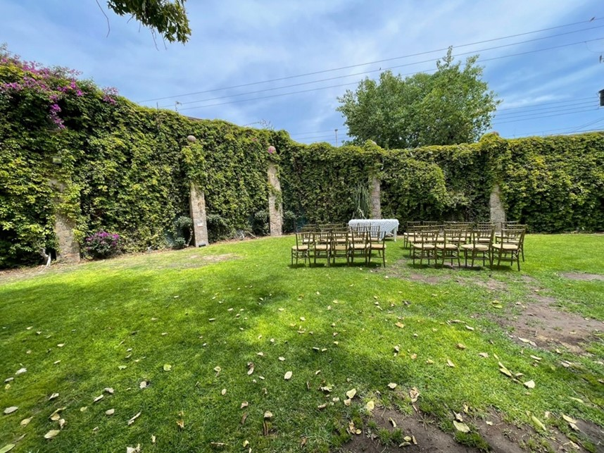
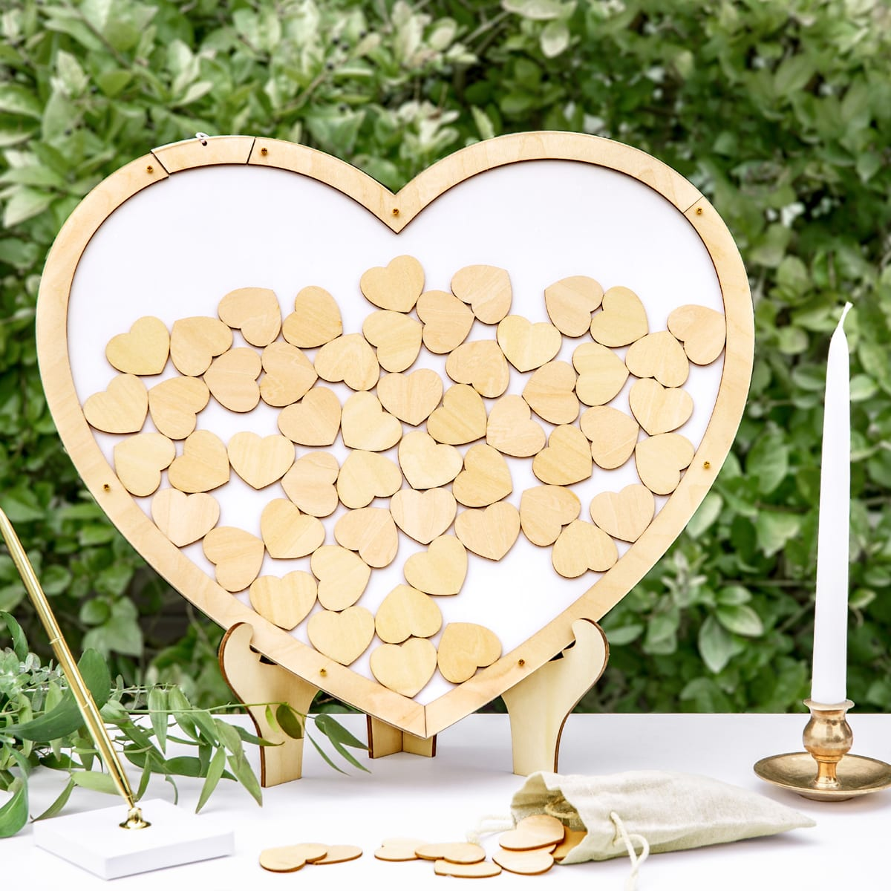
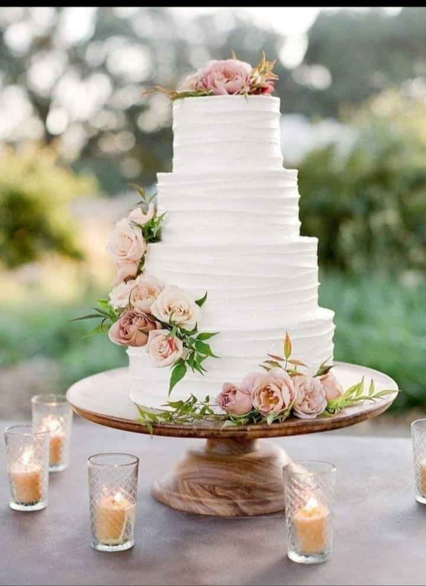

Les compartimos parte de los preparativos que tenemos para la boda, asi com recuerditos, invitaciones, colores y asi. Algunas imagenes son representacion de lo que escogimos ya que cosas como el pastel no podremos ver su resultado final hasta el dia de la boda
Invitaciones

Optamos por un diseño tipo sobre, este se encuentra seccionado en tres partes en donde la primera sección muestra la fecha, hora y locación en donde se llevará cabo la ceremonia civil, la parte central es la invitación general, en donde cordialmente se hace la invitación a nuestra boda, así mismo se indica el lugar donde será la recepción para la fiesta posterior a la ceremonia, por ultimo en el lado derecho se encuentran los pases para el acceso al salón en donde se llevara acabo la fiesta.
Recuerditos para mujeres
En el caso de los recuerdos para las mujeres optamos por una crema para manos, así como un espejo y a estos les pusimos nuestro logo. La idea de que fuera así es debido a que buscábamos algo que fuese duradero, que la gente pudiera usar y conservar (en el caso del espejo).
Colores de la boda
Para la colorimetría optamos por un tono azul cobalto (ya que es el color favorito de Efra) y este lo combinamos con un tono dorado (en este caso un camino para la mesa) y a su vez agregamos flores en tonos blancos para que contrasten con el azul.
Lugar para la ceremonia
Para el lugar de la ceremonia elegimos el hotel hacienda la noria ya que nuestra idea principal es que fuese en un jardín porque queríamos que fuese al aire libre y rodeado de naturaleza para un toque más romántico y especial. En la imagen se puede apreciar una representación del posible montaje.
Libro de firmas
Para la recepción nos parecido una gran idea poder tener un mensaje de nuestros invitados, así que buscamos una forma de que al entrar al salón pudiesen dejar sus buenos deseos, así que encontramos este libro de firmas en forma de corazón en el cual pueden depositar pequeños corazoncitos de madera con dicho mensaje.
Nuestro pastel
Elegimos un pastel de 3 pisos de vainilla con relleno de fresa y cubierto de betún de limón, adornado con flores naturales en tonos azules para que contrasten con el tono blanco del pastel. La idea la tomamos después de un mes de ardua búsqueda en internet y porque estábamos super indecisos.